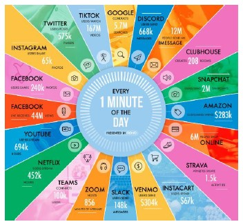
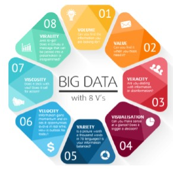
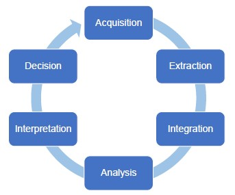
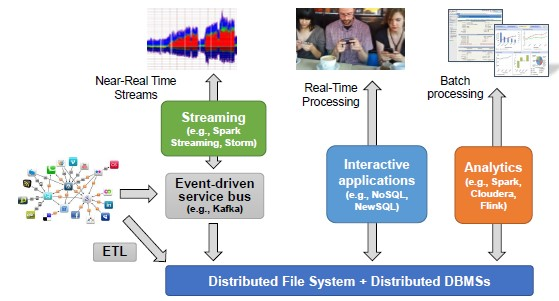
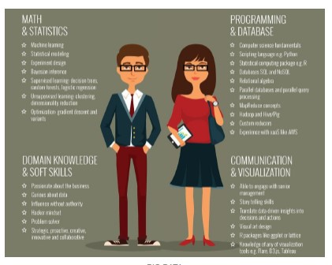

Big Data Introduction ↵
Big Data
Nowadays, we produce more data than the capability of analyze them.
- Data grows faster than energy on chip
Check out the updated infographic
SKA telescope produce 3TB every second. They cannot store all the data but they need to analyze them and store the results.

Big Data - Definition
How can we distinguish big data from normal data? The line is quite vague
Big data exceeds the reach of commonly used hardware environments and software tools to capture, manage, and process it with in a tolerable elapsed time for its user population - Teradata
We can define Big Data following the V's principles:
- VOLUME (dataset that are particularly big)
- VELOCITY, interpreted in two ways:
- velocity in which data are injected
- speed of the analysis that you want to run
- VARIETY (many different formats of data)
- structured vs semi-structured (JSON)
- VERACITY (in many cases, you are dealing on datasets which you cannot fully rely on)
- especially true when you are dealing with social data

The 'V' concept can be extended but we only consider the first four as they are the main ones.
Big Data Hype
Big Data comes mainly from two phenomenons:
- explosion of social networks
- IoT (sensors, smart cities, wearables, industry 4.0)
The data that comes from these two sources is quite enormous with respect to the amount of data produced by companies.
The Long Tail Model - Pareto Rule reversed
The highest value does not come from the small set of highly popular items, but from the long list of niche items.
- Insignificant data is actually the most valuable.
The possibility to handle large amount of data makes you smarter. Sometimes, no complex algorithm is needed:
Google Translate just collects snippets of translations, match it with a long list of translations stored in their dataset, and return the most used one.
- The system is continuously debugged.
Success Stories
- German National Football Team
They applied data analysis to football and they won the 2016 world championship.
- Crime Prevention in LA
- Diagnosis and Treatment of Genetic Disease
- Investments in the Financial Sector
- Astronomical Discoveries
- Injury Prevention of Football Players
Todays' Opportunities and Use Cases
- Healthcare (remote monitoring, preventive care, reduced hospitalization, improved system efficiency)
- Manufacturing (sensors)
- Location-Based Services
- Public Sector (citizen surveys)
- Retail (social media)
Privacy
Marketing campaigns are particularly effective when costumers are going through a change (maternity, new job, lifestyle). A company wanted to send advertising about maternity products BEFORE the baby was actually born. They were able to identify patterns of behaviors adopted by costumers when a baby was coming. However, the company incurred in legal issues because they sent maternity adv to a 16 y.o girl who did not inform the parents about the pregnancy. The company won the legal dispute but it raised some concerns regarding privacy.
Big Data Lifecycle

Acquisition
- Selection (understand which data is actually valuable)
- Filtering and Compression (very important because raw data is often too voluminous to store it all)
- Collect Metadata Collecting Metadata is fundamental to understand, measure, and control the data. Metadata describes the data so it enables trustworthiness, reproducibility and debugging.
There are some software tools that allow you to collect metadata. This is a job that cannot be fully integrated.
- human input is required in this phase :sad:
Extraction
Depending on the analysis that you need to run, you work with specific data.
- Transformation and Normalization
- Cleaning and Error Handling
- Very important because of the untrustworthy of big data
Integration
In most cases, you will work with data coming from different sources, so, you will need to integrate them.
The activities performed to integrate data:
- discover the relationship between datasets
- standardization, conflict management and entity resolution
- resolve heterogeneity and conflicts in data structure and semantics
- understand the trade-off of different modeling strategies
Analysis
- Exploration (approach the data with new explorative approaches to gain a full understanding)
- Analytics (understand which approach works better to solve business problems)
- Delivery (find the best way to model and represent the results)
Interpretation
You need to be careful because sometimes it is common to rush to conclusions. It is important to verify the results:
- when you work with big data you should work on small artificial samples to verify expectations
- identify a subset of the data collected, analyze it and verify the results.
It is interesting to remember that CORRELATION between data does not always mean that it is real.
Correlation is not Causation :heart:
Decision
The decision-making process requires strong managerial skills
Processing Big Data
When you are on a distributed architecture, it is important to manage the distribution of machines. Many problems can happen in distributed environments.
Since data is spread across machines, it is important to replicate those data. Also, it will not be possible to update data at the same time so you will need to deal with consistency (eventual consistency).
- it may happen that data collected at the same time may refer to different momentos.
Big Data Software Stack
New programming environments designed to get their parallelism not from a supercomputer but from computer clusters.
Apache Hadoop
- automate the management of low level applications
- low-level tool, more advanced tools can be applied to it
It is a software library (framework) that allows for the distributed processing of large data sets across clusters of computers using simple programming models.
Rather than relying on hardware to deliver high-availability and reliability, the library itself is designed to detect and handle failures at the application layer, so as to deliver a highly-available service on top of a cluster of computers.
Hadoop Modules
- HDFS (Hadoop Distributed File System) - storage
- layer that handles the storage of data across different machines
- provides ABSTRACTION on the storage of data
- YARN (Yet Another Resource Negotiator) - computation
- decides which unit of application runs in which machine
- if some unit of work fails in some machine, it will recreate it in another machine
- Map Reduce - analysis
- YARN-based system for parallel processing of large data sets
On top of Hadoop
Many different programming solutions can be applied on hadoop:
- Analytics (batch)
- simple/complex computations over large amounts of stored data
- Interactive (real-time)
- operational perspective
- Streaming (near-real-time)
- continuous analytics
- analysis run on continuously incoming data
- there is no much time and resources, you need to adopt some approximation algorithms
Big Data Flow

In the distributed file system, it is often used the metaphor of the Data Lake. A data lake is a central repository system for storage, processing, and analysis of raw data, in which the data is kept in its original format and is processed to be queried only when needed. It can store a varied amount of formats in big data ecosystems, from unstructured, semi-structured, to structured data sources.
NoSQL - NewSQL DBMSs
Relational DBMSs have not been designed to easily distributed. NoSQL DBMSs have risen to fill this gap. NewSQL is the latest frontier which combines the benefits from both relational and NoSQL worlds.
Techniques for Big Data Analysis
- Extract, transform, and load (ETL)
- Data fusion and data integration
- Data management
- Analytics
- Data mining
- Association rule learning
- Classification
- Cluster analysis
- Regression
- Machine learning
- Supervised learning
- Unsupervised learning
- Data mining
- Cloud computing
Goals of Analytics
- Descriptive Analytics (give insights into the past)
- Diagnostic Analytics (understand why something has happened)
- integrating the dataset analyzed with other data to look for correlation paths
- Predictive Analytics (look at the future)
- Prescriptive Analytics (prescribe what action to take to eliminate a future problem)
Job Opportunities
Between 2019 and 2023, companies will hire 210K to 267K professionals with skills in mathematics, computer science, and 4.0. Most demanded professional figures:
- Data Scientist
- Big Data Analyst
- Cloud Computing Expert
- Cyber Security Expert
- Business Intelligence Analyst
- Social Media Marketing Manager
- Artificial Intelligence Systems Engineer
Data Scientist
The main figure emerged with big data is the one of the data scientist (sexiest job in the world).
He deals with data analysis once data volume and velocity reaches a level requiring sophisticated technical skills.

Data Architect
Develop data architecture to effectively capture, integrate, organize, centralize and maintain data.
Data Engineer
Develop, test and maintain data architectures to keep data accessible and ready for analysis.
Data Analyst
Processes and interprets data to get actionable insights for a company.
Ended: Big Data Introduction
Batch Application ↵
YARN - Yet ANother Resource Negotiator
In the same cluster, I want to run some programs and applications. The problem regards how these computations allocate resources.
The resource negotiator:
- In charge of assigning units of work
- Has a global view of the resources available in the cluster
- Decides where and when each uint of work should be allocated and with how many resources
- Uses a scheduling policy to manage concurrency
- Avoids over-instantiation of processes
- Handles fault-tolerance
Potentially, we can run as many process as we want on each machine but we do not want to overload it.
YARN provides APIs for requesting and working with cluster resources.
- It is a general framework (works with any kind of application you want to run)
- Application are written using analytical frameworks
Main Daemons
YARN work with the master/slave mechanism:
- Resource Manager (ultimate authority that arbitrates among all the applications)
- Node Manager (per-node slave)
- In charge of running containers which run applications (virtual abstract entities associated with a certain amount of resources. We have a virtual environment that run applications)
For each application. there is one container that runs a special process that in charge of coordinating the single operation.
Coordination happens on two levels:
- Resource Manager, composed by two components:
- Application Manager (start the application - accept request from client and start the machine)
- Scheduling component (decides where resources should be allocated)
- For each application, we have another process (application master process) that manages the resources of each application
Application execution consists of the following steps:
- A client program submits the application, including the necessary specifications to launch the application-specific AMP itself
- The RM assumes the responsibility to negotiate a specified container in which to start the AMP and then launches it
- The AMP registers with the RM
- The AMP negotiates appropriate resources containers
- On successful container allocations, the AMP launches the container by providing the container launch specification
- The application code executing within the container provides necessary information
- During the application execution, the client that submitted the program communicates directly with the AMP to get status and updates
- Once the application is complete, the AMP de-registers with the RM and shuts down, allowing its own container to be repurposed
YARN Scheduler
YARN provides a choice of schedulers and configurable policies:
- FIFO scheduler (useless)
- Fair Scheduler (with multiple applications that want to access the resource, the scheduler will balance the resources among the two applications)
- Problem related to prediction of execution time as resources are split
- Capacity Scheduler (the amount of resources is divided in two profiles - fixed amount)
- Each application run within a profile have access to a fixed amount of resources
- Execution time is predictable but there may be a waste of resources
Data Locality
When the scheduler needs to identify the resources to allocate, it does so following the data locality principle. The point is to exploit cluster typology and data block replication to apply the data locality principle.
When computation involves large set of data, it is cheaper to move code to data rather than data to code